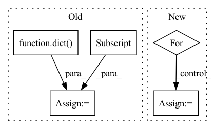

Pattern ID :36580
Before Change
if isinstance(source, paddle.DataParallel):
source = source._layers
target_model_map = dict( target.named_parameters())
for param_name, source_param in source.named_parameters():
target_param = target_model_map[param_name]
target_param.set_value(beta * source_param +
(1.0 - beta) * target_param)
After Change
def soft_update(source, target, beta=1.0):
assert 0.0 <= beta <= 1.0
for param, param_test in zip(source.parameters(), target.parameters()):
param_test.data = torch.lerp(param.data, param_test.data, beta)
class StyleGANv2ADAModel(torch.nn.Module):In pattern: SUPERPATTERN
Frequency: 3
Non-data size: 5
Instances Fragment ID: 103942693
Project Name: miemie2013/miemiegan
Commit Name: 39bb68bed00d2dff900df1877cb99b89d44aa123
Time: 2022-02-24
Author: 53960695+miemie2013@users.noreply.github.com
File Name: mmgan/models/architectures/styleganv2ada_model.py
M Class Name: AnonimousClass
N Class Name: AnonimousClass
M Method Name: soft_update(3)
N Method Name: soft_update(3)
M Parent Class:
N Parent Class:
M File Name: mmgan/models/architectures/styleganv2ada_model.py
N File Name: mmgan/models/architectures/styleganv2ada_model.py
M Start Line: 18
M End Line: 27
N Start Line: 12
N End Line: 15
Before Change
shared_data = dict(gradients=shared_grads, buffers=shared_buffers,
num_data_points=self.num_data_points if self.provide_num_data_points else None,
labels=labels if self.provide_labels else None)
true_user_data = dict(data=data, labels=labels)
return shared_data, true_user_data
After Change
optimizer = torch.optim.SGD(self.model.parameters(), lr=self.local_learning_rate)
seen_data_idx = 0
for step in range(self.num_local_updates):
data = user_data[seen_data_idx: seen_data_idx + self.num_data_per_local_update_step]
labels = user_labels[seen_data_idx: seen_data_idx + self.num_data_per_local_update_step]
seen_data_idx += self.num_data_per_local_update_step
seen_data_idx = seen_data_idx % self.num_data_points
optimizer.zero_grad() Fragment ID: 103942700
Project Name: jonasgeiping/breaching
Commit Name: 1ab2867fea20551797c9aea8ae67099093ec7180
Time: 2021-10-01
Author: jonas.geiping@googlemail.com
File Name: breaching/cases/users.py
M Class Name: UserMultiStep
N Class Name: UserMultiStep
M Method Name: compute_local_updates(2)
N Method Name: compute_local_updates(2)
M Parent Class: UserSingleStep
N Parent Class: UserSingleStep
M File Name: breaching/cases/users.py
N File Name: breaching/cases/users.py
M Start Line: 151
M End Line: 187
N Start Line: 158
N End Line: 200
Before Change
self.model = model
self.batch_processor = batch_processor
self.data_loaders = dict(
train=data_loaders["train"],
val=data_loaders.get("val", data_loaders.get("test")),
test=data_loaders.get("test", data_loaders.get("val")))
if isinstance(stages, dict):
stages.update(kwargs)
self.stages = stages if isinstance(stages, (list, tuple)) else [stages]After Change
self.model = model
self.batch_processor = batch_processor
for a, b in permutations(("val", "test")):
if a in data_loaders and b not in data_loaders:
data_loaders[b] = data_loaders[a]
self.data_loaders = data_loaders
if isinstance(stages, dict):
stages.update(kwargs) Fragment ID: 103942685
Project Name: yeliudev/nncore
Commit Name: 383fca025306fae685c3fd17b1652b29f6462eb2
Time: 2021-03-25
Author: yeliudev@outlook.com
File Name: nncore/engine/engine.py
M Class Name: Engine
N Class Name: Engine
M Method Name: __init__(9)
N Method Name: __init__(9)
M Parent Class: object
N Parent Class: object
M File Name: nncore/engine/engine.py
N File Name: nncore/engine/engine.py
M Start Line: 69
M End Line: 82
N Start Line: 70
N End Line: 83